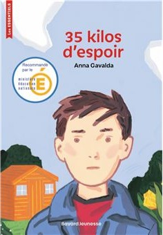

Cette séquence s'appuie sur des extraits de 35 kilos d'espoir d'Anna Gavalda. Elle ne constitue pas une reproduction intégrale de l'œuvre. Dans ma pratique de classe, chaque élève dispose d'un exemplaire du livre acquis par l'établissement. Entre les extraits, je poursuis la lecture à voix haute, nous échangeons sur la compréhension et formulons des hypothèses avant d'aborder le passage suivant. Ces documents accompagnent la lecture de l'œuvre et ne remplacent pas le livre.